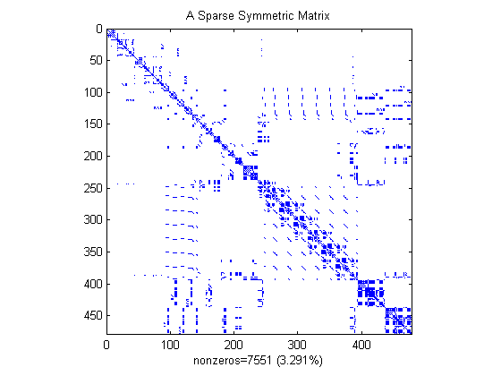
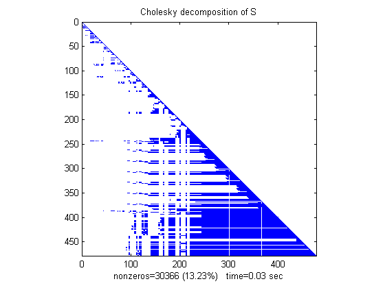
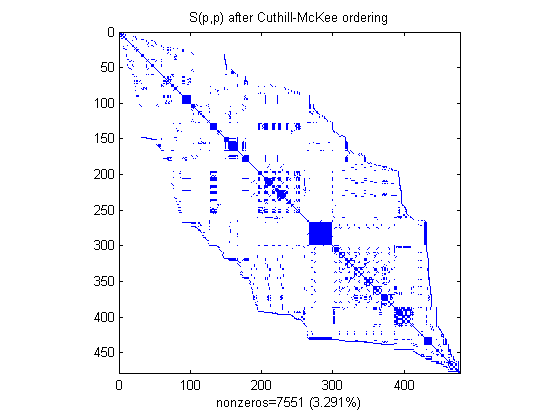
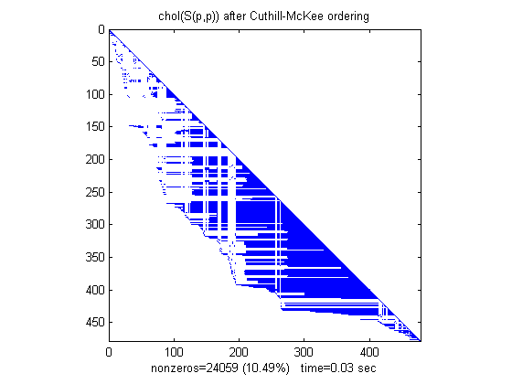
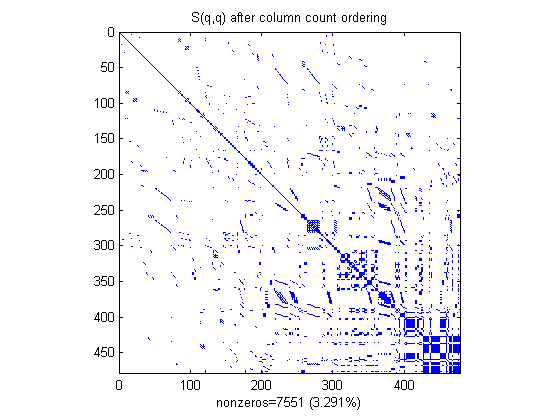
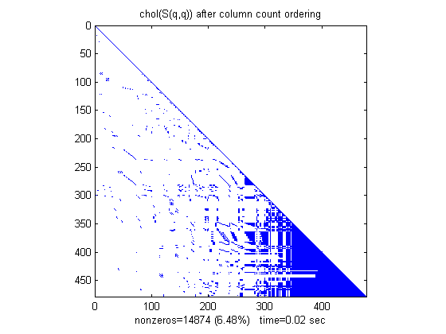
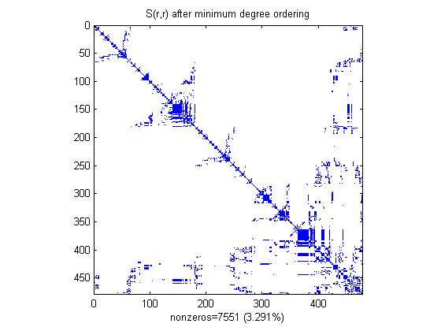
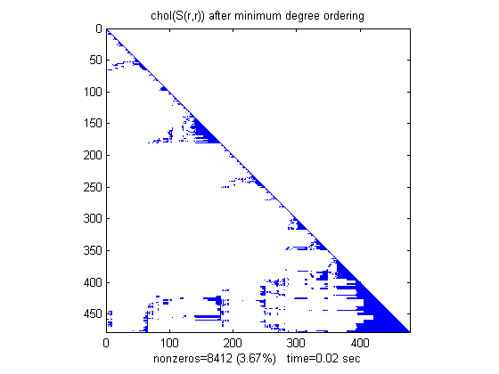
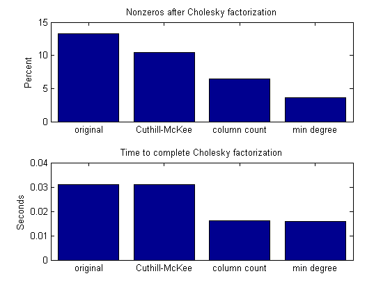

This demonstration shows that reordering the rows and columns of a sparse matrix S can affect the time and storage required for a matrix operation such as factoring S into its Cholesky decomposition, S=L*L'.
A SPY plot shows the nonzero elements in a matrix.
This spy plot shows a SPARSE symmetric positive definite matrix derived from a portion of the Harwell-Boeing test matrix "west0479", a matrix describing connections in a model of a diffraction column in a chemical plant.
load('west0479.mat') A = west0479; S = A * A' + speye(size(A)); pct = 100 / prod(size(A)); spy(S), title('A Sparse Symmetric Matrix') nz = nnz(S); xlabel(sprintf('nonzeros=%d (%.3f%%)',nz,nz*pct));
Now we compute the Cholesky factor L, where S=L*L'. Notice that L contains MANY more nonzero elements than the unfactored S, because the computation of the Cholesky factorization creates "fill-in" nonzeros. This slows down the algorithm and increases storage cost.
tic, L = chol(S)'; t(1) = toc; spy(L), title('Cholesky decomposition of S') nc(1) = nnz(L); xlabel(sprintf('nonzeros=%d (%.2f%%) time=%.2f sec',nc(1),nc(1)*pct,t(1)));
By reordering the rows and columns of a matrix, it may be possible to reduce the amount of fill-in created by factorization, thereby reducing time and storage cost.
We will now try three different orderings supported by MATLAB.
* reverse Cuthill-McKee * column count * minimum degree
The SYMRCM command uses the reverse Cuthill-McKee reordering algorithm to move all nonzero elements closer to the diagonal, reducing the "bandwidth" of the original matrix.
p = symrcm(S); spy(S(p,p)), title('S(p,p) after Cuthill-McKee ordering') nz = nnz(S); xlabel(sprintf('nonzeros=%d (%.3f%%)',nz,nz*pct));
The fill-in produced by Cholesky factorization is confined to the band, so that factorization of the reordered matrix takes less time and less storage.
tic, L = chol(S(p,p))'; t(2) = toc; spy(L), title('chol(S(p,p)) after Cuthill-McKee ordering') nc(2) = nnz(L); xlabel(sprintf('nonzeros=%d (%.2f%%) time=%.2f sec', nc(2),nc(2)*pct,t(2)));
The COLPERM command uses the column count reordering algorithm to move rows and columns with higher nonzero count towards the end of the matrix.
q = colperm(S); spy(S(q,q)), title('S(q,q) after column count ordering') nz = nnz(S); xlabel(sprintf('nonzeros=%d (%.3f%%)',nz,nz*pct));
For this example, the column count ordering happens to reduce the time and storage for Cholesky factorization, but this behavior cannot be expected in general.
tic, L = chol(S(q,q))'; t(3) = toc; spy(L), title('chol(S(q,q)) after column count ordering') nc(3) = nnz(L); xlabel(sprintf('nonzeros=%d (%.2f%%) time=%.2f sec',nc(3),nc(3)*pct,t(3)));
The SYMAMD command uses the approximate minimum degree algorithm (a powerful graph-theoretic technique) to produce large blocks of zeros in the matrix.
r = symamd(S); spy(S(r,r)), title('S(r,r) after minimum degree ordering') nz = nnz(S); xlabel(sprintf('nonzeros=%d (%.3f%%)',nz,nz*pct));
The blocks of zeros produced by the minimum degree algorithm are preserved during the Cholesky factorization. This can significantly reduce time and storage costs.
tic, L = chol(S(r,r))'; t(4) = toc; spy(L), title('chol(S(r,r)) after minimum degree ordering') nc(4) = nnz(L); xlabel(sprintf('nonzeros=%d (%.2f%%) time=%.2f sec',nc(4),nc(4)*pct,t(4)));
labels={'original','Cuthill-McKee','column count','min degree'};
subplot(2,1,1)
bar(nc*pct)
title('Nonzeros after Cholesky factorization')
ylabel('Percent');
set(gca,'xticklabel',labels)
subplot(2,1,2)
bar(t)
title('Time to complete Cholesky factorization')
ylabel('Seconds');
set(gca,'xticklabel',labels)
